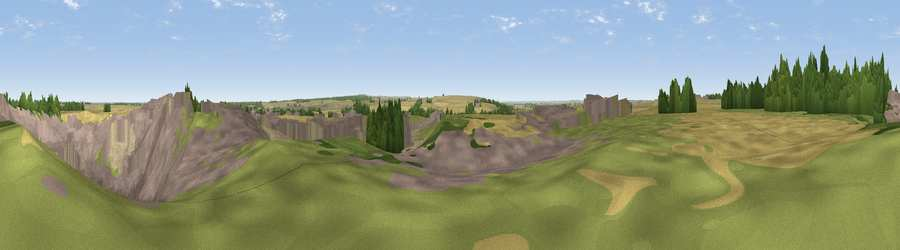

Viewpoint near Melton Ross
#36966 in England · top 72% of its area beats it · near Melton RossWhere it is
The exact computed spot (TA 06970 11794). Click the marker for map links.
The view, rendered

A 360° render of this exact spot computed from the terrain model, tree cover and land cover — summer colours, afternoon light, calibrated against photographs of famous viewpoints. Real trees, hedges and buildings will differ in detail.
The panorama
Grey silhouette: terrain skyline in each direction (720 bearings, Earth curvature and refraction included). Dashed green: skyline with trees (+15 m) and buildings (+8 m) as obstacles. Blue strip: how far the ground is visible on each bearing.
Where the view opens
Wedge length = distance to the farthest visible ground on that bearing (vegetation-aware). Rings at 10, 25 and 50 km.
What fills the view
46% built-up · 27% cropland · 14% grassland · 7% bare ground · 5% woodland
Angular shares of the visible panorama (visual magnitude), not map area. Landscape diversity 0.59 (0–1 Shannon).
Key numbers
More beautiful places nearby
The staircase of upgrades: each row has a higher view potential than everything closer. Driving times are estimates from straight-line distance, calibrated against real road routing — check an actual route before setting out.
| Place | Direction | Drive | Score |
|---|---|---|---|
| Viewpoint near Elsham | WNW · 3 km | ~7 min | 42.1 |
| Viewpoint near Barnetby le Wold | WSW · 3 km | ~7 min | 45.9 |
| Viewpoint near Bigby | S · 4 km | ~10 min | 51.8 |
| Elsham Hill | WNW · 5 km | ~10 min | 52.6 |
| Saxby Wold | NW · 9 km | ~18 min | 53.9 |
| Fonaby Top | SSE · 10 km | ~20 min | 60.7 |
| Viewpoint near Nettleton | SSE · 13 km | ~24 min | 64.7 |
| Viewpoint near Claxby | SSE · 16 km | ~28 min | 70.5 |
53.59182, -0.38534 · source: osm peak · position refined by local search. Computed location — check access rights before visiting.